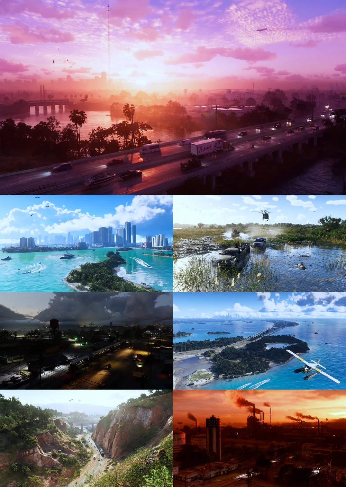

Grand Theft Auto VI, noto anche con l'acronimo GTA VI, è un videogioco d'avventura dinamica open world in sviluppo presso Rockstar Games, che ne curerà anche la pubblicazione.Costituisce l'ottavo capitolo principale della serie Grand Theft Auto e il seguito di Grand Theft Auto V (2013). Ambientato nello stato fittizio di Leonida, basato sulla Florida, segue il duo criminale formato da Jason Duval e Lucia Caminos; il mondo di gioco comprende Vice City, ispirata a Miami, ed è liberamente esplorabile.[

Il gioco è ambientato nello stato fittizio di Leonida, basato sulla Florida; la mappa comprende Vice City, ispirata a Miami, le Leonida Keys, Grassrivers, modellata sulle Everglades, Port Gellhorn, Ambrosia e il Mount Kalaga National Park. Il gioco rappresenta in chiave satirica la cultura statunitense degli anni 2020, dai social media e dalla cultura delle celebrità alle tecnologie impiegate dalle forze dell'ordine, come le body cam, e al fenomeno mediatico noto come «Florida Man». Vice City era già comparsa nel primo Grand Theft Auto (1997) ed era stata l'ambientazione principale di Grand Theft Auto: Vice City (2002) e Grand Theft Auto: Vice City Stories (2006).
